Profile
행동을 만드는 콘텐츠를 기획하는 콘텐츠 마케터입니다. 상세페이지 디자인으로 시작해, 같은 상품도 구성에 따라 판매량이 달라지는 것을 보며 콘텐츠의 목적은 고객의 행동을 이끌어 내는 것이라고 생각하게 됐습니다. 그 생각으로 디자인에서 콘텐츠 기획과 채널 운영, 영업 현장까지 일의 범위를 넓혀 왔습니다.
김예진 · 디자인하는 콘텐츠 마케터 · 경력 5년
어려운 B2B 솔루션을 고객이 이해하는 콘텐츠로 기획하고, 디자인까지 직접 만듭니다. 그 콘텐츠로 들어온 문의는 미팅과 판매까지 이어 왔습니다.
회사 블로그 월 순방문자 3.4배 · 프로모션 메일에서 실제 판매까지 · 라우드소싱 상세페이지 우승
행동을 만드는 콘텐츠를 기획하는 콘텐츠 마케터입니다. 상세페이지 디자인으로 시작해, 같은 상품도 구성에 따라 판매량이 달라지는 것을 보며 콘텐츠의 목적은 고객의 행동을 이끌어 내는 것이라고 생각하게 됐습니다. 그 생각으로 디자인에서 콘텐츠 기획과 채널 운영, 영업 현장까지 일의 범위를 넓혀 왔습니다.
2019 – 2022
기획디자인
2024 – 2026
콘텐츠 마케팅 & 디자인
2026 –
AI 활용 수출 마케팅 이미지 제작2026.09
대전/세종 글로벌진출전략프로그램 · 1일 특강
ChatGPT로 마케팅 이미지를 생성하는 방법을 체계적으로 배웠습니다.
UX/UI 디자인2023.06 – 2024.06
디자인나스
Figma·Photoshop·Illustrator로 앱과 웹사이트를 리디자인하며 사용자 리서치, 와이어프레임, 프로토타입, 앱·웹 화면 설계, 디자인 시스템을 공부했습니다.
반응형 웹디자인 구축 실무, 부트스트랩2020.06 – 07
부산디자인진흥원
나래디자인학원에서 배운 HTML/CSS를 응용해 반응형 웹 구축과 부트스트랩을 배웠습니다.
영상편집을 활용한 UI/UX 웹디자인2019
나래디자인학원
Photoshop·Illustrator·Premiere Pro와 HTML/CSS를 배웠습니다.
미샤 뷰티 크리에이터2017.04 – 2017.12 · 9개월
교내활동
미샤 제품을 활용한 뷰티 영상 기획, 촬영 및 편집
애경산업 루나 서포터즈 1기 (활동 우수상)2016.02 – 2016.06 · 5개월
사회활동
루나 신제품 테스트 및 리뷰, 콘텐츠 제작 참여
2024.11–2026.10 AI 옥외광고 데이터 분석 기업 애드(addd)에서 블로그·SNS·메일·문서를 기획하고 직접 디자인했습니다. 이미지를 누르면 기획 의도와 과정을 자세히 볼 수 있습니다.
addd 작업물
기사도 광고 예산도 없던 시티핑크를, 경쟁이 적은 틈새 키워드로 구글 검색 상단에 올린 홈페이지 아티클입니다.
시티핑크는 관련 기사가 발행되지 않아 검색했을 때 보여 줄 정보가 부족했습니다. 그래서 구글 검색에 유리한 회사 홈페이지에 시티핑크를 설명하는 글을 직접 쌓기로 했습니다.
다만 ‘광고트럭’ 같은 메인 키워드는 타 업체의 검색 광고 때문에 상위 노출이 어려웠고, 광고 예산을 쓸 수 있는 상황도 아니었습니다. 그래서 경쟁은 적지만 우리에게 꼭 맞는 틈새 키워드를 찾았습니다.
상품의 가장 큰 장점
시티핑크는 규제샌드박스를 통해 유일하게 합법적으로 운영하는 광고트럭입니다. 다른 업체가 쓸 수 없는 이 장점을 그대로 키워드로 삼아 제목과 본문에 반복해 담았습니다.
기존 고객이 상품을 찾고, 기억하게
새로운 수요
광고주가 아닌 전시·미디어아트 쪽에서 수요를 만들고 싶었습니다. 이 독자는 ‘광고트럭’이라 검색하지 않으므로, 가장 보편적으로 쓰는 말인 ‘LED 트럭’을 넣어 ‘LED 트럭 미디어아트’로 검색하면 우리 글이 나오도록 썼습니다.
새로운 고객이 우리를 발견하게

‘합법 광고트럭’ 키워드로, 광고주가 궁금해할 순서대로 시티핑크를 풀었습니다. 일 3만 명 이상 노출, 평균 시청률 40% 이상의 근거까지 담았습니다.
노선 노출·시청률 시청률의 비결 성과 데이터 예산·운영

‘LED 트럭 미디어아트’ 키워드로, 고정형 미디어아트의 한계에서 출발해 해외 순회 전시 사례를 시티핑크의 새로운 활용법으로 연결했습니다.
고정형 미디어아트의 한계 이동성이라는 대안 해외 사례 시티핑크 활용법
Article 01 · 2026.05.20 · addd.co.kr
강남역과 신논현역 근처에서 핑크트럭이 연이어 달리는 장면을 본 적 있으신가요? 바로 애드(addd)의 시티핑크 강남 광고 트럭입니다.
시티핑크는 강남역과 신논현역 일대를 기본 노선으로 하며, 3대가 연이어 주행하며 확실한 임팩트를 선사하는 이동형 DOOH 미디어입니다.
운영 시간 : 월-토 (11:30~20:00) / 일요일 미운행
규제샌드박스를 통해 국내에서 유일한 합법 광고 트럭을 운영하는 애드(addd)는 지난 25년부터 기존 광고트럭 달고T에서 핑크 컬러로 주목도를 더욱 높여 ‘시티핑크’라는 이름으로 새롭게 브랜딩하여 운영하고 있습니다.
이동형 DOOH 매체 미디어 시티핑크의 특징과 차별점에 대해 알려드리겠습니다.

시티핑크의 기본 노선은 강남역에서 신논현역 사이 강남대로입니다. 이 거리는 내국인뿐만 아니라 외국인 관광객들도 많이 찾는 곳으로 강남을 대표하는 랜드마크 거리로 불리기도 합니다.
성형외과, 매장, 식당, 영화관 등이 밀집되어 있어 방문객이 많고 관광객, 지하철 이용객, 직장인 등 다양한 유형의 유동인구가 모이는 곳입니다.
폭넓은 타깃층을 커버하는 만큼, 특정 브랜드나 품목에 국한되지 않고 다양한 업종의 광고 집행이 가능한 장소입니다.

시티핑크의 대표적인 장점으로는 이동형 DOOH 미디어로서 넓은 범위의 지역에 광고 송출이 가능한 커버리지 매체라는 점과 증명할 수 있는 많은 노출인구 수와 높은 시청률입니다.
강남-신논현 구간에서 하루 8시간 운행 기준 일 3만 명 이상에게 노출되며, 평균 시청률 40% 이상으로 많은 사람들에게 광고가 도달합니다.
그렇다면, 시티핑크만의 높은 시청률 비결은 무엇일까요?
시티핑크는 인도면을 따라 시속 30km 이하로 서행합니다. 보행자 시야의 높이와 같고, 물리적 거리가 가깝기 때문에 시야에 자연스럽게 들어옵니다.
시티핑크에는 여러 대가 하나의 광고를 동시에 송출하는 싱크플레이 기술이 적용되어 있습니다.
3대가 연속 주행하며 같은 광고를 반복 노출하기 때문에 메시지 전달력이 높고, 보행자와 운전자 모두의 시선을 자연스럽게 사로잡아 브랜드 호감도를 상승시키며, 장기기억으로의 전환율을 높입니다.
길에서 마주치면 시선이 갈 수밖에 없는 시티핑크의 파노라마 싱크플레이는 온라인 공유로 이어지는 바이럴 효과까지 기대할 수 있습니다.

‘일 3만 명 이상 노출, 40% 이상의 시청률.’ 증명할 수 있는 이유는 무엇일까요?
시티핑크에는 옥외광고 성과 분석 솔루션 애드아이(addd-i)가 탑재되어 있기 때문입니다.
옥외광고 효과 지표 얼라이언스 공식 3단계 데이터 생산 기업 애드(addd)의 독자적인 Vision AI 기술을 통해 유효노출인구 수, 시청률, 주목률부터 광고를 시청한 사람들의 시청 시간, 성별, 연령 분석까지.
대시보드를 통해 광고 성과를 실시간으로 확인할 수 있으며. 광고 성과 데이터의 리포트까지 함께 제공해드리고 있습니다.

강남역은 유동인구가 많아 노출이 보장되는 만큼 광고 집행 비용도 높은 곳입니다.
그러나 국내유일 합법 광고트럭 시티핑크는 강남대로 타 미디어와 비교했을 때, 광고비는 80% 저렴하고 노출량은 240% 높아 효율적인 예산 운영이 가능합니다.
최근 단기 캠페인 수요가 늘어남에 따라 운영 방식도 대폭 유연화하여 1일 단위의 집행도 가능해진 시티핑크. 언제든 편하게 문의주세요!
Article 02 · 2026.08.14 · addd.co.kr

최근 미디어아트는 건물 외벽의 미디어 파사드부터 구형 조형물, 커브형 전광판, 기둥형 디스플레이까지 다양한 형태로 확장되고 있습니다.
하지만 대부분 한 장소에서 콘텐츠를 반복 재생하는 고정형 매체라는 공통점이 있는데요.
최근에는 미디어아트에 이동성과 현장성을 더해, 도시 곳곳의 관람객을 직접 찾아가는 새로운 전시 방식도 등장하고 있습니다.

한편, 시티핑크는 일반적인 미디어아트 매체와 달리, 도시를 직접 이동하며 콘텐츠를 보여줄 수 있는 모바일 DOOH 매체입니다.
디지털 화면을 활용하면서도 원하는 지역과 동선을 따라 이동할 수 있기 때문에, 관람객이 전시장을 찾아오기를 기다리는 대신 콘텐츠가 사람들을 직접 찾아갈 수 있습니다.
특히 이동형 디지털 매체는 활용 가능한 종류가 많지 않은데요. 시티핑크는 규제샌드박스를 통해 합법적으로 운영되는 국내 유일 합법 광고트럭으로, 도심 주행과 콘텐츠 송출을 안정적으로 진행할 수 있습니다.
시티핑크의 가장 큰 장점은 ‘찾아가는 매체’라는 점입니다.
유동 인구가 많은 지역을 순회하며 반복적으로 콘텐츠를 노출할 수 있고, 이동하는 대형 LED 화면 자체가 주변의 시선을 끌기 때문에 고정형 전광판과는 다른 현장감과 주목도를 만들 수 있습니다.
또한 미디어아트의 내용과 관련된 장소를 직접 찾아가는 방식으로도 활용할 수 있습니다. 지역의 문화와 역사를 다룬 작품은 해당 지역을 순회하고, 환경을 주제로 한 작품은 강변이나 관련 장소를 찾아가는 등 콘텐츠와 실제 공간을 연결하는 전시가 가능합니다.
이처럼 미디어아트에 이동성을 더하면 단순히 영상을 재생하는 것을 넘어, 도시 곳곳에서 사람들과 작품이 만나는 하나의 경험을 만들 수 있습니다.
해외 사례 1


코로나19로 미술관 방문이 어려워지자, K Contemporary 갤러리는 대형 광고트럭에 현대미술 작품을 싣고 덴버와 볼더 지역을 순회했습니다. 관람객이 전시장을 찾아가는 대신, 작품이 지역 주민들의 일상으로 직접 찾아간 것입니다.
트럭 양쪽 면에는 숀 허킨스와 데이지 패튼 작가의 작품이 전시되었습니다. 미리 정해진 경로를 따라 이동하는 트럭 자체가 하나의 전시 공간이 되어, 더 많은 사람이 일상 속에서 자연스럽게 현대미술을 접할 수 있도록 했습니다.
이 사례는 LED 화면을 활용한 사례는 아니지만, 트럭의 이동성을 살려 도시 곳곳을 이동하며 미술 작품을 선보이는 기획으로 예상하지 못한 장소에서 작품을 만나는 특별한 경험을 만들어낸 케이스입니다.
해외 사례 2


해밀턴 아티스트와 니콜슨 프로젝트는 약 6개월 동안 워싱턴 D.C. 전역에서 《I’ll Meet You There》를 선보였습니다.
신체성, 정체성, 이주, 기억, 공동체적 돌봄을 다룬 영상 작품을 갤러리와 LED 광고트럭에서 상영했습니다. 트럭은 매주 도시의 여러 지역을 순회하며 작가가 선정한 장소와 도서관, 지역 단체 앞에 정차해 상영회와 공개 토론을 진행했습니다. 사람과 기억이 도시 안에서 어떻게 이동하고, 각 지역의 역사와 공동체가 어떻게 연결되는지를 다룬 작품의 주제를 전시 방식에도 그대로 반영한 것입니다.
이 프로젝트는 LED 트럭을 단순한 영상 송출 수단이 아니라, 서로 떨어진 전시 공간과 지역사회를 연결하는 이동형 문화 공간으로 활용했다는 점에서 의미가 있습니다.
해외 사례 3


작가 Tod Lippy는 뉴욕 아트 위크 기간에 LED 트럭을 운행하며 이메일 자료로 구성된 영상 작품 《All of the Gang》을 상영했습니다.
이 작품은 제프리 엡스타인과 현대미술계 인물들의 관계를 보여주는 이메일 기록을 통해 미술계 내부의 권력과 연결망에 관한 질문을 던졌습니다.
트럭은 소호와 트라이베카, 그리니치 빌리지 등 갤러리와 미술 관계자들이 밀집한 지역을 직접 순회했습니다. 작품이 다루는 미술계의 관계와 구조를 실제 미술 현장 안에서 보여주며, 작품의 내용과 이동 경로를 연결한 것입니다. 작품과 관련된 장소를 직접 찾아가 관람객에게 메시지를 노출하고, 도시의 거리에서 사회적인 질문을 던지는 이동형 공공미술 사례입니다.
해외 사례 4

《8×5 Houston》은 수감 경험이 있는 작가를 포함한 10명의 작품을 통해 대량 수감 문제를 실제 감옥이 위치한 도시 공간 안에서 보여주며, 작품의 주제와 이동 경로를 연결한 공공미술 프로젝트입니다. 처음에는 고정형 광고판에 작품을 전시할 예정이었지만, 매체사들이 게재를 거부하면서 두 대의 디지털 광고트럭을 활용하게 되었습니다.
트럭에 송출된 멜 친의 《Actual Size》는 대형 광고면 안에 평균적인 감방의 크기인 5×8피트 공간을 실제 비율로 표현한 작품입니다. 침상과 변기만 놓인 좁은 공간을 광고면의 전체 크기와 비교해 보여줌으로써, 수감자의 생활 환경을 관람객이 직관적으로 체감하도록 했습니다.
트럭은 미술관과 아트센터 앞에 정차하는 동시에, 작품이 다루는 문제와 직접 관련된 Harris County Jail 주변을 순환했습니다.
이 프로젝트는 디지털 광고트럭을 단순한 작품 송출 수단이 아니라 사회문제가 존재하는 현장으로 직접 찾아가는 매체로 활용한 것으로 방금 전 3번 사례와 유사한 부분이 있어 보입니다.
해외 사례 5

Ariadna Arnés는 NFT.NYC 2025 기간 동안 인공지능으로 제작한 세 작품을 뉴욕의 여러 공간에서 선보였습니다.
이 작품은 사진만으로는 표현하기 어려웠던 내면의 감정과 상상 속 장면을 인공지능을 통해 시각화한 것으로, 브루클린과 세계무역센터의 갤러리를 포함해 맨해튼을 주행하는 디지털 광고 트럭에서도 상영되었습니다.
이 프로젝트는 단순히 전시 범위를 넓힌 것을 넘어, 디지털 환경에서 탄생한 AI 아트를 도시의 실제 공간과 연결했다는 점에서 의미가 있습니다.

앞서 살펴본 사례들은 LED 트럭을 단순한 송출 화면이 아니라, 작품과 장소를 연결하는 이동형 전시 공간으로 활용했습니다. 작품의 주제와 관련된 지역을 직접 찾아가고, 트럭의 이동 경로까지 전시의 일부로 만든 것입니다. 시티핑크 역시 작품에 맞춰 운행 경로와 정차 장소를 기획하면, 거리와 도로를 새로운 문화 공간으로 확장할 수 있습니다.
여기에 정차 상영이나 QR 콘텐츠, 여러 대의 트럭을 활용한 동시 송출을 더하면 단순한 영상 노출을 넘어 하나의 미디어아트 프로젝트로 발전시킬 수 있습니다.
시티핑크를 활용한 미디어아트 프로젝트에 관심이 있다면 언제든지 애드 addd로 문의주세요. 감사합니다!
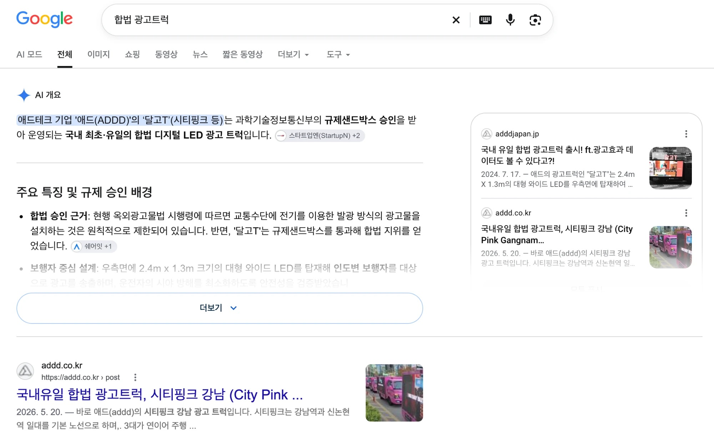
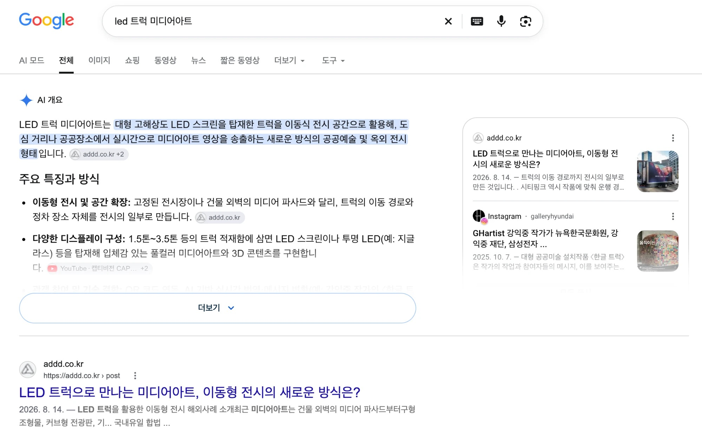
광고비 없이 검색 결과 상단에
광고비를 쓰지 않고도 구글에서 ‘합법 광고트럭’과 ‘LED 트럭 미디어아트’를 검색하면 우리 아티클이 상단 첫 번째 결과로 나옵니다. 또한 AI 개요가 시티핑크를 ‘국내 최초·유일의 합법 디지털 LED 광고 트럭’으로 설명할 때 우리 글을 근거로 삼았습니다.
2026년 11월 검색 결과 확인 기준이며, 순위는 시점과 환경에 따라 달라질 수 있습니다.
키워드가 문의의 첫 문장으로
“합법트럭 시티핑크 문의합니다”
‘합법 광고트럭’을 밀기 시작한 뒤, 고객이 문의할 때 이 표현을 그대로 쓰기 시작했습니다. 상품의 장점이 고객이 기억하는 이름이 된 것입니다.
기사가 없는 상품을 위해 검색에 유리한 홈페이지를 택했고, 경쟁이 치열한 메인 키워드 대신 상품의 가장 큰 장점과 새로운 수요에 맞춘 틈새 키워드를 골랐습니다.
그 결과 광고비 없이 ‘합법 광고트럭’과 ‘LED 트럭 미디어아트’ 검색 시 구글 상단에 노출되었고, 고객이 ‘합법트럭 시티핑크’라는 이름으로 문의하기 시작했습니다.
Done
마케팅addd홈페이지 아티클
예산 없이 틈새 키워드로 쓴 아티클 2편이 구글 검색 상단에 노출됐습니다.
회사 소식과 보도자료 중심이던 ADDD 공식 블로그를, 검색 유입과 광고 상품 문의를 만드는 마케팅 채널로 바꿨습니다.
ADDD 공식 네이버 블로그의 콘텐츠 기획·디자인과 운영을 맡았습니다. 기존 회사 소식과 보도자료 중심으로 운영되던 블로그를 검색 유입과 광고 상품 문의를 유도하는 마케팅 채널로 개선했습니다.
검색 키워드 중심의 콘텐츠 기획과 블로그 디자인 리뉴얼로 방문 트래픽을 넓히고, 실제 서비스 문의로 이어지는 성과를 만들었습니다.
기존 블로그는 전시회 참가, 보도자료 등 회사 소식을 기록하는 용도로 운영되어 검색을 통한 신규 고객 유입에 한계가 있었습니다. 제목에 검색 키워드가 충분히 담기지 않았고, 상품 정보와 문의 경로도 부족해 마케팅 채널로서의 활용도가 낮았습니다.
회사 PR 중심이라 검색 수요를 반영한 정보성 콘텐츠가 부족했습니다.
키워드를 고려하지 않은 보도자료형 제목이었습니다.
게시물 안에 문의를 유도하는 CTA가 없었습니다.
상품별 콘텐츠 탐색과 브랜드 정보 전달을 위한 구성 개선이 필요했습니다.
고객 문의에 자주 등장하는 표현과 상품의 주요 셀링 포인트를 키워드로 정하고, 정보 탐색부터 서비스 문의까지 자연스럽게 이어지는 구조를 목표로 했습니다.
업계 트렌드·정보성 콘텐츠와 상품 관련 키워드를 활용했습니다.
광고 트럭, 버스TV, 광고 분석 솔루션의 특징과 실제 활용 사례를 소개했습니다.
검색 의도에 맞는 제목과 이미지·데이터 중심의 정보로 구성했습니다.
블로그 구조와 CTA 배너를 리뉴얼했습니다.
회사 PR 중심에서 DOOH 트렌드, 광고 매체 정보, 시티핑크·애드아이 등 상품 활용 사례로 콘텐츠를 넓혔습니다. ‘아이돌 광고트럭’, ‘합법 광고트럭’처럼 실제 고객의 관심사와 연결되는 키워드를 중심으로 제목을 기획했습니다.
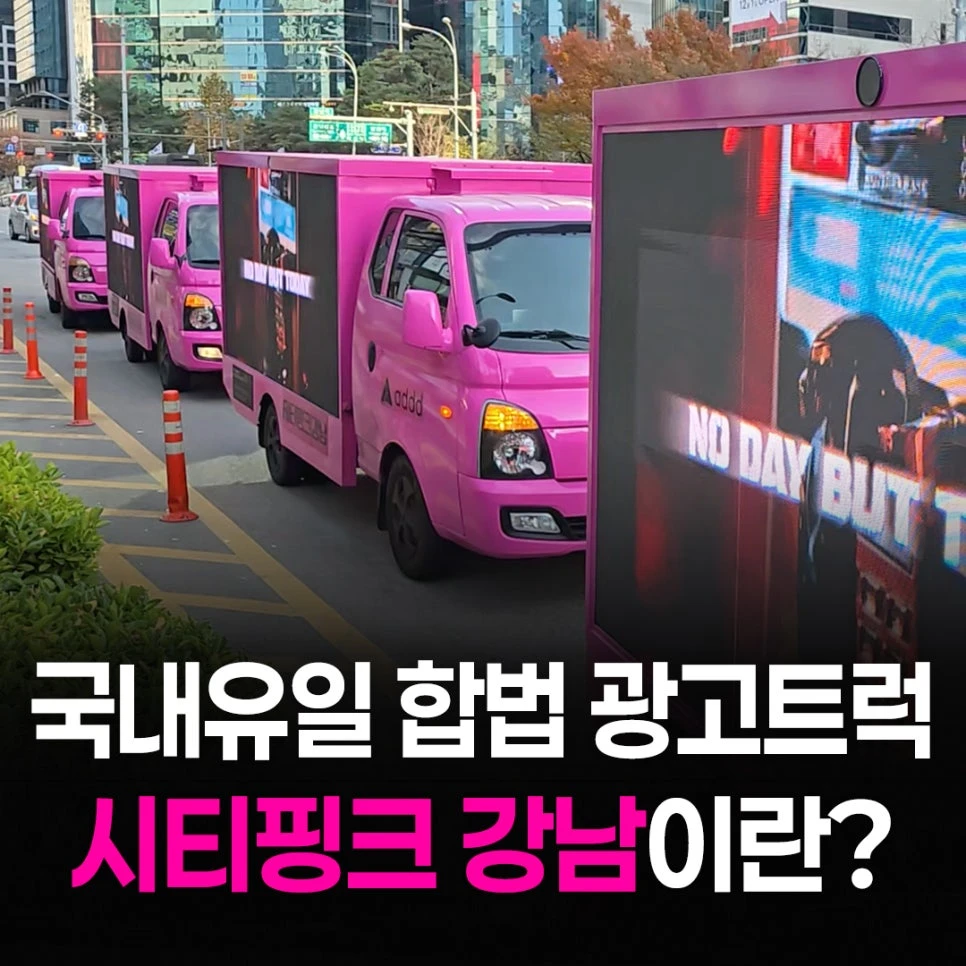
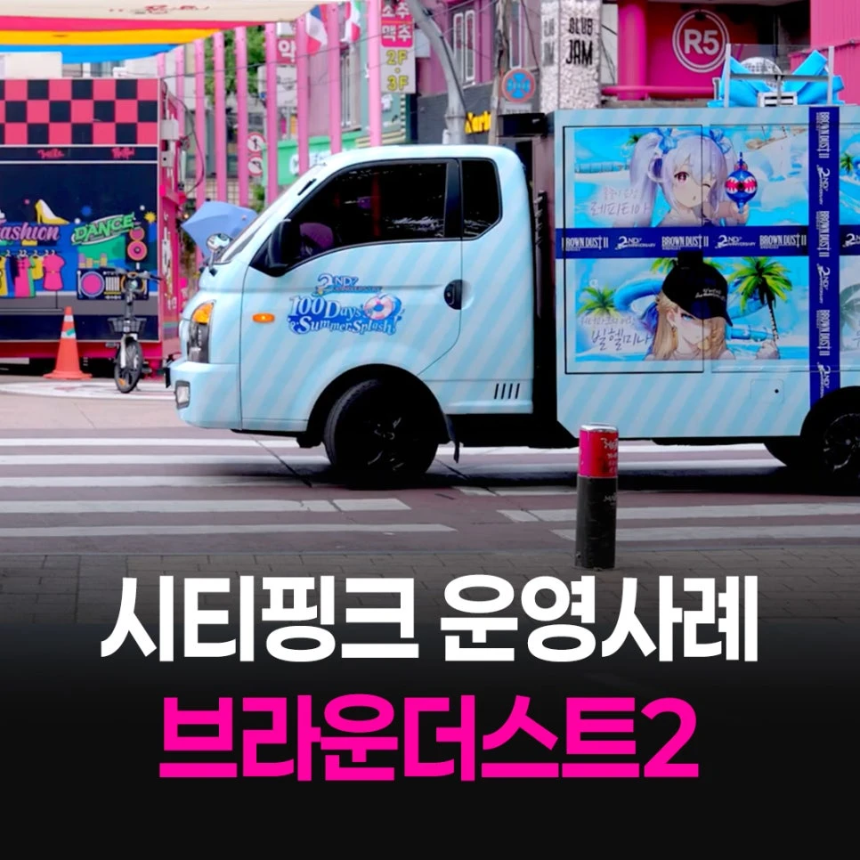
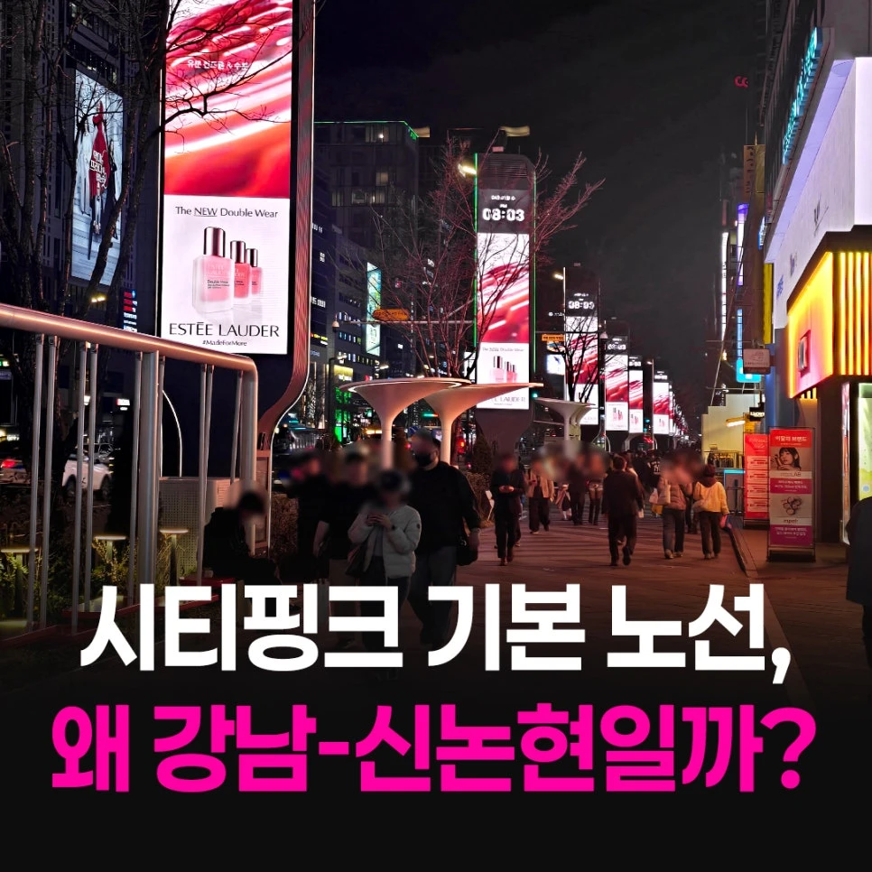
실제 운영 사례와 데이터 분석 자료로 정보량과 구체성을 높였습니다.
평균 본문 분량
약 1,000자 → 1,950자게시글당 이미지
4.4장 → 11.2장블로그 스킨과 썸네일 디자인을 개선하고, 회사 소식·솔루션·광고매체·인사이트 중심으로 카테고리를 재구성해 필요한 정보를 쉽게 찾을 수 있게 했습니다.

게시물 하단에 광고 문의 페이지로 연결되는 배너를 만들고, 연락처와 문의 버튼을 명확하게 배치했습니다.


CTA 적용률
0% → 73%월별 조회수와 순방문자, 게시글별 유입 효율을 분석하며 운영 방향을 다듬었습니다. 주요 상품 키워드의 검색 노출을 확인하고 관련 콘텐츠를 꾸준히 발행했습니다.
월별 순방문자
리뉴얼 이후 여섯 달 중 네 달이 관리 전 최고치(210명)를 넘었습니다.
월 순방문자
537명
5.1배 · 2025.01 대비 2026.03 최고
게시글당 조회수
78회
3.5배 · 2025.02 대비 2026.03
월평균 순방문자
381명
2.8배 · 관리 전 대비 관리 후
월평균 조회수
473회
2.3배 · 관리 전 대비 관리 후
CTA 적용률
73%
0% → 73%
콘텐츠 공유
47건
0건 → 47건 · 담당 전 3개월 대비
월평균 조회수·순방문자는 2025.01–09와 2025.11–2026.03 비교, 게시글당 조회수는 2025.02와 2026.03 비교입니다. 각 칸의 회색 점은 관리 전, 검은 점은 관리 후입니다.
주요 상품 키워드 네이버 검색 상위 노출
‘스페이스아이 팝업 분석’
블로그 탭‘합법 광고트럭’
블로그 탭‘강남역 광고트럭’
블로그 탭‘아이돌 광고트럭’
블로그 탭2026년 11월 검색 결과 확인 기준이며, 순위는 시점과 환경에 따라 달라질 수 있습니다.


실제 서비스 문의 발생
‘석촌호수 방문객 27% 증가’ 같은 데이터 기반 콘텐츠와 광고 상품 관련 검색 콘텐츠를 보고 실제 문의 메일과 전화가 들어왔습니다.
기존 블로그의 콘텐츠 방향과 정보 구조를 개선하고, 고객의 검색 수요를 반영한 콘텐츠를 꾸준히 만들었습니다.
그 결과 월 순방문자 최고 약 5배 성장, 게시글당 조회 효율 약 3.5배 개선을 기록했고, 주요 상품 키워드의 검색 상위 노출과 실제 광고 문의까지 연결했습니다.
Done
마케팅addd네이버 블로그
Photoshop, Claude
회사 소식 블로그를 검색 채널로 바꿔 월 순방문자를 5.1배로 늘렸습니다.
Claude를 활용해 HTML 초안을 만들고, HTML/CSS로 레이아웃과 세부 디자인을 수정했으며, Photoshop으로 메일 속 이미지와 프로모션 배너를 직접 제작했습니다.
기존 광고 제안 메일의 정보 전달 방식과 시각적 구성을 개선해 광고 상품의 이해도를 높이고, 잠재 고객의 문의와 실제 광고 판매로 연결한 프로젝트입니다.

기존 광고 제안 메일은 줄글과 제안서 다운로드 버튼으로만 구성되어 있어, 자세한 내용을 알려면 제안서를 내려받아 읽어야만 했습니다.
상품 특징과 광고 효과가 일반 문장에 섞여 있어 핵심 내용을 빠르게 파악하기 어려웠습니다.
상품의 특징이나 프로모션 혜택을 직관적으로 보여 주는 이미지와 시각 요소가 없었습니다.
어떤 상황과 프로모션에 광고 매체를 쓰면 효과적인지 구체적으로 전하기 어려웠습니다.
제안서 보기 버튼 외에 상품과 프로모션 정보를 확인할 행동 유도 요소가 없었습니다.
명확한 헤더와 구조화된 서식을 갖춘 이메일의 수신자 참여도 상승
Campaign Monitor 보고서의미 있는 소제목과 글머리 기호로 훑어보기 쉽게 만들었을 때 텍스트 사용성 향상
Nielsen Norman Group 연구이 근거를 바탕으로 세 가지 개선 방향을 정했습니다.


줄글 중심의 메일을 소제목과 정보 위계로 정리하고, 주요 혜택 → 광고 운영 모습 → 상품 경쟁력 → 활용 방안으로 자연스럽게 이어지도록 구성했습니다.
2+1 프로모션 혜택을 강조한 배너를 제작하고, 실제 광고 게첨 영상을 GIF로 넣어 혜택과 매체 운영 모습을 직관적으로 전달했습니다.
광고비 절감, 노출 효율, AI 기반 성과 데이터 등 핵심 경쟁력을 별도 영역으로 구성해 차별점을 쉽게 파악하도록 했습니다.
신제품 론칭, 엔터테인먼트 프로모션, SNS 바이럴 등 구체적인 활용 사례를 제안해 실제 집행 상황을 떠올릴 수 있게 했습니다.
단가표 확인, 프로모션 혜택 안내, 제안서 다운로드 등 목적별 CTA를 배치하고 담당자 연락처를 명확히 안내했습니다.


기존 광고 제안 메일의 정보 전달 문제를 분석하고, 상품의 경쟁력과 프로모션 혜택을 효과적으로 전달할 수 있도록 콘텐츠와 디자인을 개선했습니다.
단순한 디자인 작업에 그치지 않고 잠재 고객의 문의 응대, 미팅, 실제 광고 판매까지 직접 참여하며 디자인 개선이 실질적인 비즈니스 성과로 이어지는 과정을 경험했습니다.
Done
마케팅addd이메일
Claude, HTML/CSS, Photoshop
줄글뿐이던 제안 메일을 다시 짜 광고 문의 8건, 판매 3건으로 이었습니다.
거의 쓰이지 않던 ADDD 공식 유튜브 채널을 다시 운영해, 광고 게첨 영상과 DOOH·옥외광고 정보성 숏폼으로 콘텐츠 노출을 넓혔습니다.
ADDD 공식 유튜브 채널의 콘텐츠 기획·영상 편집·썸네일 디자인과 운영을 맡았습니다. 광고 게첨 영상과 DOOH·옥외광고 정보성 숏폼을 만들고, 유튜브 쇼츠·인스타그램 릴스·네이버 클립에 동시 배포해 콘텐츠 노출을 넓혔습니다.
기존 유튜브 채널은 영상 업로드가 거의 이루어지지 않아 활용도가 낮았습니다. 움직임이 특징인 광고 트럭은 영상으로 보여 줄 때 상품의 특성이 가장 잘 전달된다고 판단해, 자발적으로 채널 운영을 다시 시작했습니다.
실제 게첨 영상을 상품 소개와 포트폴리오 용도로 제작하고, 주목도 높은 사례는 숏폼으로도 활용했습니다.
신규 시청자 유입을 위해 DOOH·옥외광고 업계 정보를 다루는 숏폼을 더했습니다.
DOOH·옥외광고 업계 이슈를 짧고 이해하기 쉬운 영상으로 기획·편집했습니다.

광고 트럭 게첨 사례와 전시회·현장 활동을 롱폼으로 제작하고, 일부 사례는 숏폼으로 다시 구성했습니다.


광고 상품별 썸네일 디자인을 통일하고, 정보성 숏폼을 세 채널에 동시 배포했습니다. 숏폼은 검은 배경 위 두 줄 제목, 시티핑크 운행 사례는 핑크 테두리와 CITY PINK 태그로 시리즈처럼 보이게 했습니다.
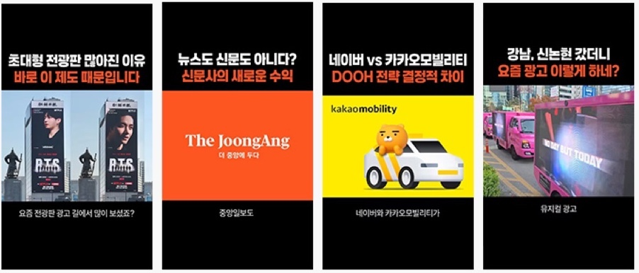
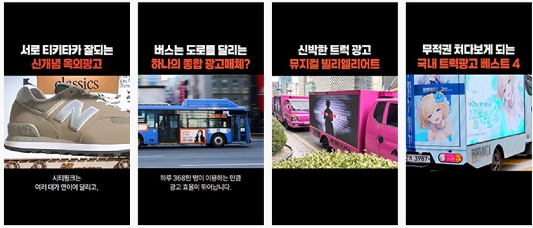
정보성 숏폼 9편 조회수
YouTube @addd.official Shorts 탭 · 2026.11.12 기준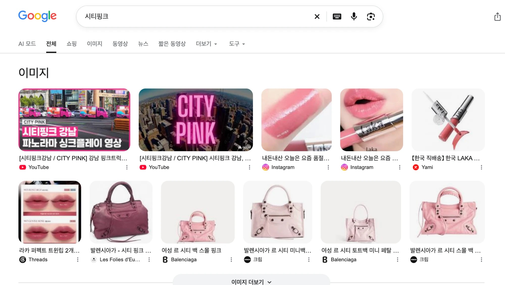
유튜브에 올린 영상이 구글 검색 최상단에
시티핑크 운행 영상을 유튜브에 꾸준히 올린 결과, 구글에서 ‘시티핑크’를 검색하면 이미지 영역 맨 앞 두 칸에 자사 유튜브 영상이 노출됩니다. 같은 이름의 화장품·패션 상품보다 먼저 보여, 브랜드를 찾는 고객에게 실제 광고 운영 모습을 바로 보여 줄 수 있게 되었습니다.
정보성 콘텐츠로 신규 시청자와의 접점을 넓히고, 실제 광고 운영 영상이 구글 브랜드 검색 결과에도 노출되는 성과를 확인했습니다.
자발적으로 유튜브 운영을 재개하고 정보성 숏폼과 실제 광고 사례를 병행해 채널의 활용도를 높였습니다.
이를 통해 영상 콘텐츠 기획·제작부터 멀티채널 배포와 브랜드 검색 노출까지 연결하는 경험을 쌓았습니다.
Done
마케팅addd유튜브
Premiere Pro
업계 숏폼과 현장 롱폼을 기획·편집해 게첨 영상 최고 2,600회를 기록했습니다.
광고 게첨 사례에 더해 업계 소식, 기업 성과, 솔루션 소개까지 주제를 넓혀, 광고에 관심이 없던 사람들에게도 브랜드를 알렸습니다.
ADDD 공식 인스타그램의 콘텐츠 기획과 디자인, 채널 운영을 맡았습니다. 광고 게첨 사례뿐 아니라 옥외광고 업계 소식, 기업 성과, 솔루션 소개 등 다양한 콘텐츠를 만들어 더 많은 사람에게 브랜드를 알리고자 했습니다.
옥외광고 업계에서는 광고 게첨 사례를 소개하는 게시물이 조회수 수십~수백 회에 머무르는 경우가 많았습니다. 광고가 걸린 모습을 보여 주는 것만으로는 새로운 이용자의 관심을 끌기 어렵다고 판단해, 더 많은 사람이 흥미를 느낄 콘텐츠가 필요했습니다.
광고에 직접적인 관심이 없는 사람도 흥미롭게 볼 수 있도록 주제를 넓혔습니다. 옥외광고 업계의 새로운 소식과 일상에서 접하는 광고 기술을 소개하고, 유튜브에서 만든 정보성 영상을 릴스로도 활용했습니다.
옥외광고 업계 소식과 트렌드를 카드뉴스와 릴스로 제작했습니다.
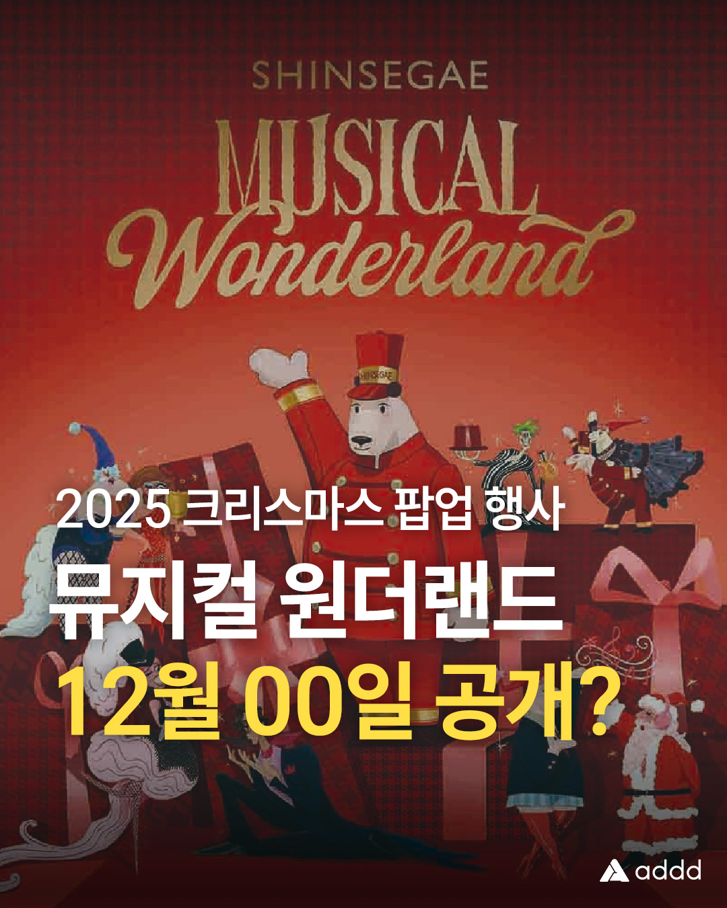
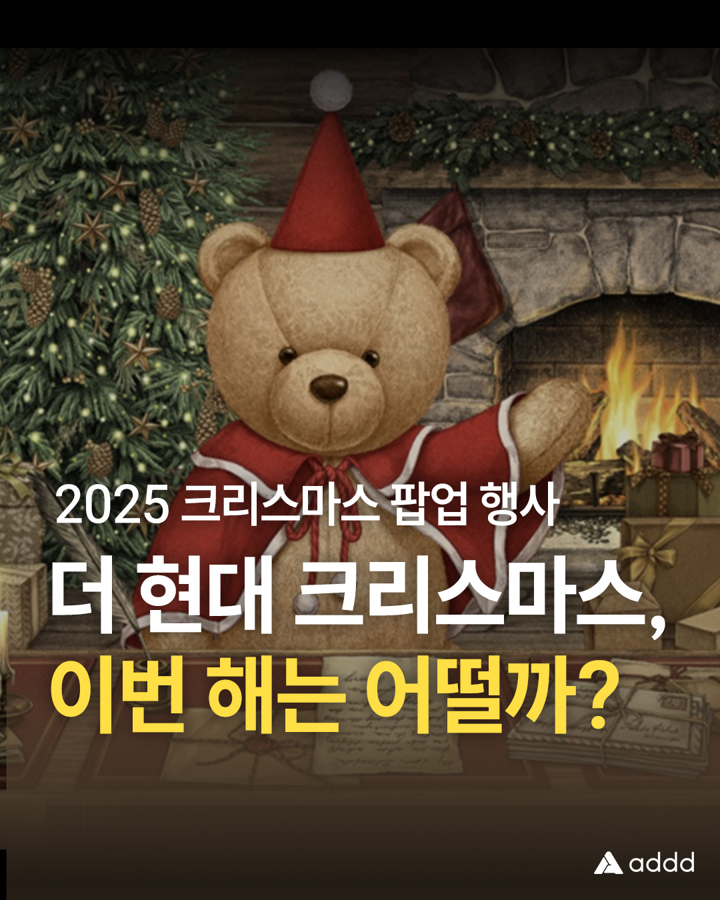
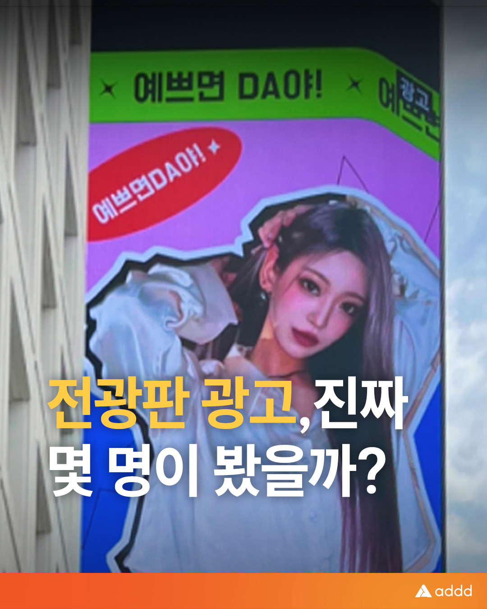
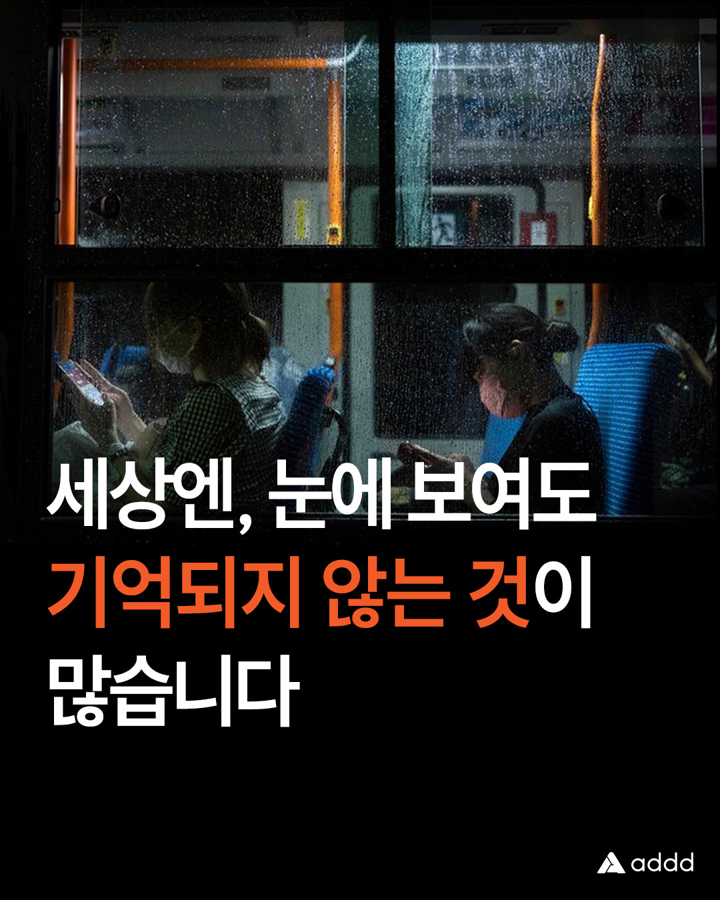
기업의 주요 소식과 애드아이·시티핑크 등 실제 광고 솔루션의 활용 사례를 소개했습니다.
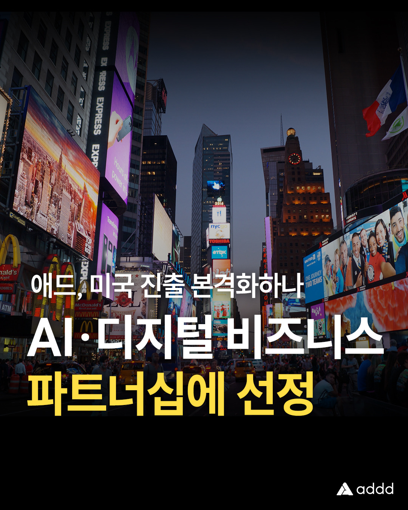
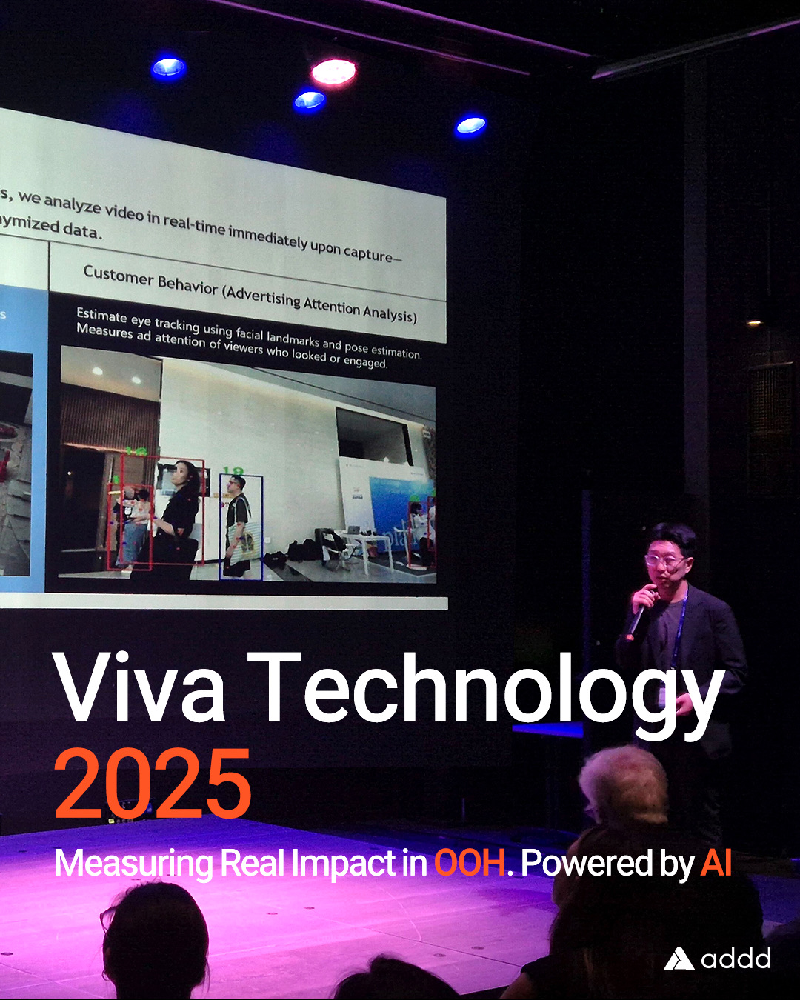
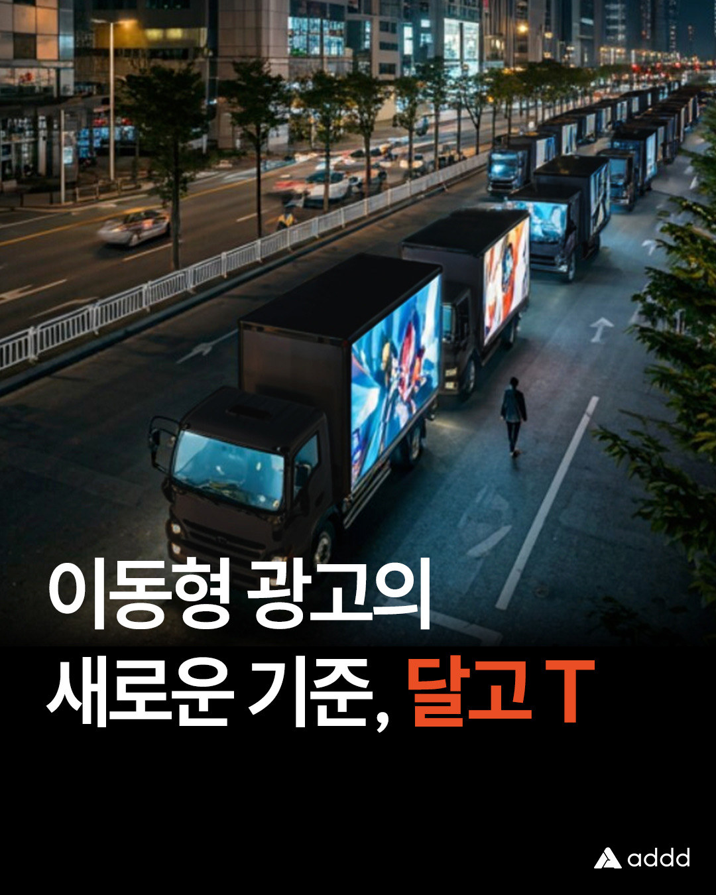
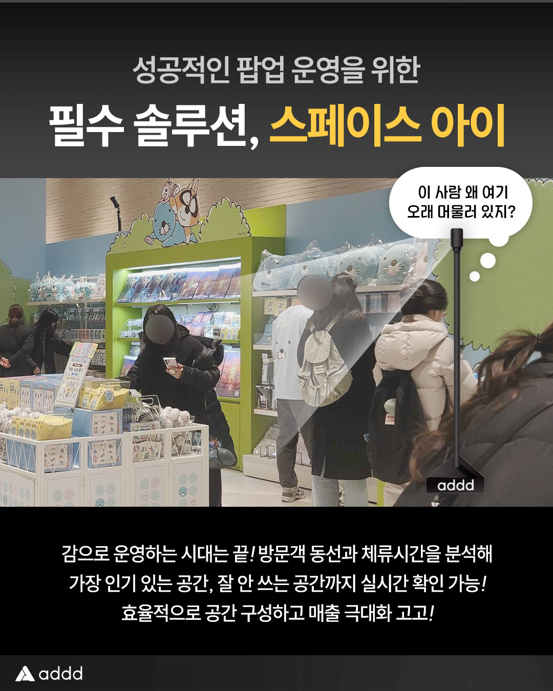
제목과 이미지, 로고 배치를 통일해 피드 디자인을 정리하고 다양한 콘텐츠를 꾸준히 발행했습니다. 위쪽 두 줄 제목, 가운데 사진, 아래 설명, 오른쪽 아래 addd 로고의 같은 틀로 만들어 주제가 달라도 한 채널로 보이게 했습니다.
게시물 조회수 비교
막대는 조회수 범위업계의 흔한 게첨 사례 게시물
수십~수백 회운영한 인기 게시물
약 4,000~5,000회최고 게시물 · 서울버스 애드아이
10,042회특히 서울버스에 설치된 애드아이 솔루션을 소개한 게시물이 가장 높은 조회수(도달 계정 7,961개, 공유 190회)를 기록했습니다. 일상에서 쉽게 접하는 소재를 활용해 더 많은 사람의 관심을 끌 수 있었습니다.
일부 이용자의 오해도 있었지만, 그만큼 다양한 이용자에게 콘텐츠가 전달되었고 정보를 더 쉽고 정확하게 설명하는 것의 중요성도 느꼈습니다.
광고 게첨 사례를 보여 주는 것에서 벗어나 사람들이 흥미를 느낄 만한 주제를 직접 찾아 콘텐츠로 만들었습니다.
그 결과 조회수 4,000~5,000회의 인기 게시물을 만들고, 최고 1만 회 이상의 조회수를 기록했습니다.
Done
마케팅addd인스타그램
Photoshop
업계 소식·기업 성과·솔루션으로 주제를 넓혀 인기 게시물 4~5천 회, 최고 10,042회를 기록했습니다.


Done
마케팅addd촬영 기획
Figma
트럭과 운행 노선이 함께 보이는 게첨 사진 구도를 기획했습니다.
개인 작업물
콘텐츠별 반응과 검색 수요를 분석해 운영 방향을 개선하고, 지속적인 검색 유입을 확보한 개인 프로젝트
폰트·디자인 정보 블로그인 ‘포토샵 젤리팁’을 개인적으로 운영했습니다. 초기에는 포토샵의 실무 기능을 소개하는 콘텐츠에 집중했으나, 콘텐츠별 조회수와 검색 유입을 분석하며 반응이 높은 폰트 리뷰 및 추천 콘텐츠로 운영 방향을 전환했습니다.
그 결과 7개월간 56편을 발행해 조회수 23,083회, 월별 순방문자 합계 16,171명을 기록했으며, 신규 발행 중단 후에도 8개월간 19,190회의 추가 조회수가 발생했습니다.
처음에는 가장 자신 있는 툴인 포토샵의 실무 기능과 노하우를 공유하는 것을 목표로 블로그를 시작했습니다. 실무에서 유용한 양질의 정보를 제공한다고 생각했지만, 개설 첫 달 조회수는 188회에 그쳐 기대만큼 유입이 발생하지 않았습니다.
이를 통해 콘텐츠의 전문성과 정보의 유용성만으로는 이용자의 관심과 검색 유입을 확보하기 어렵다는 점을 체감했습니다.
평소 관심이 많았던 폰트 추천 콘텐츠를 발행했더니 기존의 포토샵 기능 소개보다 조회수가 빠르고 높게 발생했습니다. 이를 계기로 콘텐츠의 완성도뿐 아니라 이용자가 실제로 무엇을 궁금해하고, 어떤 방식으로 검색하는지 파악하는 것이 중요하다고 판단했습니다.
이용자들은 특정 폰트명을 알고 검색하기보다, 유튜브나 영상에서 본 글꼴의 이름을 찾으려는 경우가 많았습니다. 또한 전문 디자이너뿐 아니라 개인 영상과 SNS 콘텐츠를 제작하는 이용자에게도 폰트 추천 정보가 필요했습니다.
그래서 단순히 예쁜 폰트를 소개하기보다 누가, 어디에서, 어떻게 사용했는지 실제 사례와 활용 방법을 함께 보여주는 방향으로 콘텐츠 전략을 구체화했습니다.
포토샵 팁, 디자인 리소스, AI, 폰트 리뷰 등 다양한 주제의 조회수를 비교했습니다. 이후 반응이 높은 폰트 콘텐츠에 집중해 총 56편 중 36편을 폰트 리뷰로 제작했습니다.
실제 사용 사례와 연결되는 검색어를 중심으로 콘텐츠를 기획했습니다. 폰트명을 모르는 이용자도 원하는 정보를 찾을 수 있도록 제목과 내용을 구성했습니다.
유튜브 자막, 브이로그, SNS 등 실제 폰트 사용 사례를 소개하고, 여러 폰트를 한 번에 비교할 수 있는 BEST5·추천형 콘텐츠를 제작했습니다.
조회수, 검색 유입, 체류시간과 독자 특성을 분석해 콘텐츠 방향을 개선했습니다. 폰트 리뷰 36편이 글별 누적 조회수의 약 95%를 차지하는 것을 확인하고 관련 콘텐츠에 집중했습니다.
실제 활용 사례 및 비교형 콘텐츠
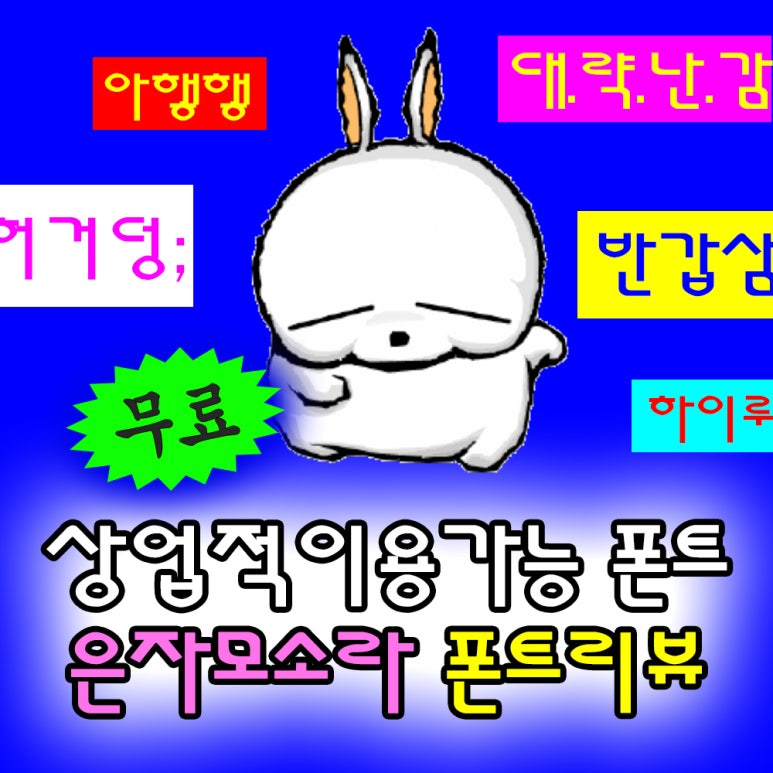
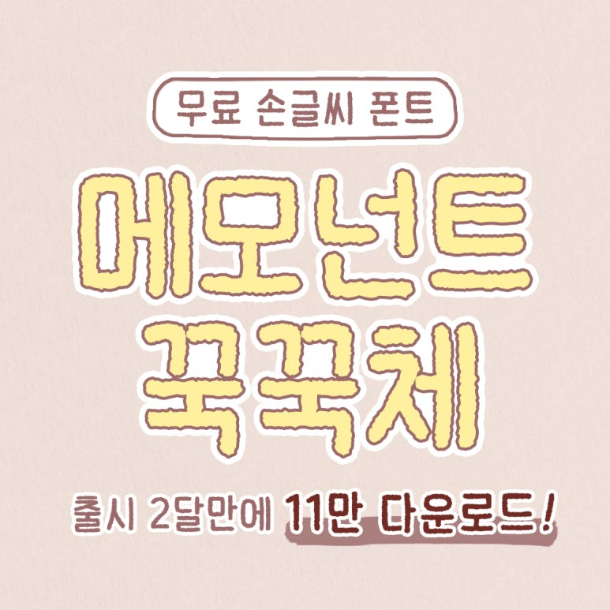
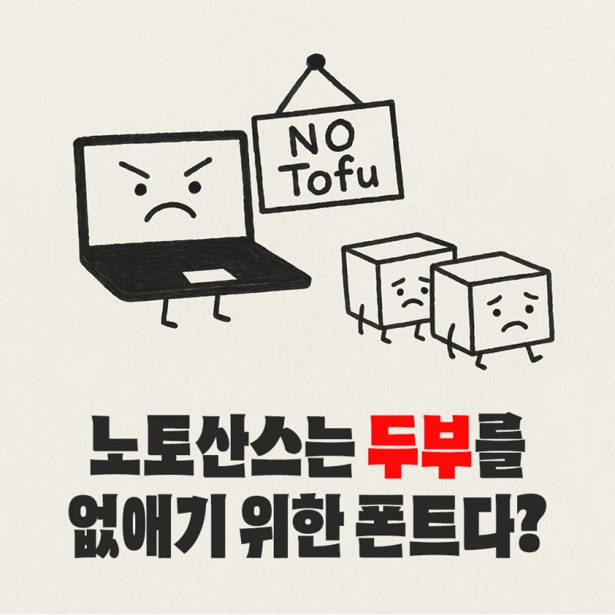
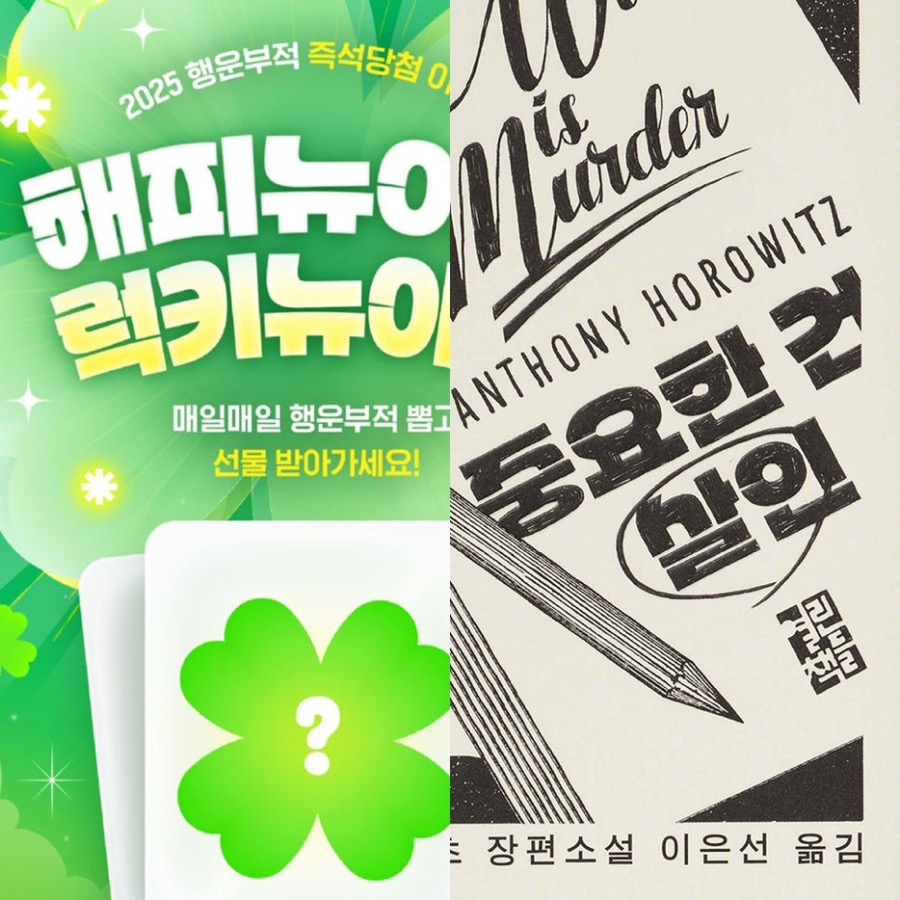
같은 폰트인데 이렇게 다를 수가?
무료·상업적 이용 가능 폰트 ‘파셜산스’가 전혀 다른 분위기로 쓰인 두 사례를 나란히 비교한 글입니다. 폰트 이름만 알려 주는 대신, 같은 폰트가 어디에 어떻게 쓰이는지 보여 주었습니다.
폰트는 중립적이지 않고, 폰트 선택 자체가 메시지의 일부가 된다는 점을 사례로 보여 주었습니다.
월별 조회수
최고 4,839회 · 2026.01첫 달(2주 반 운영) 188회에서 2026년 1월 4,839회로, 약 25배가 됐습니다.
유입 경로
검색 유입 합계 약 77%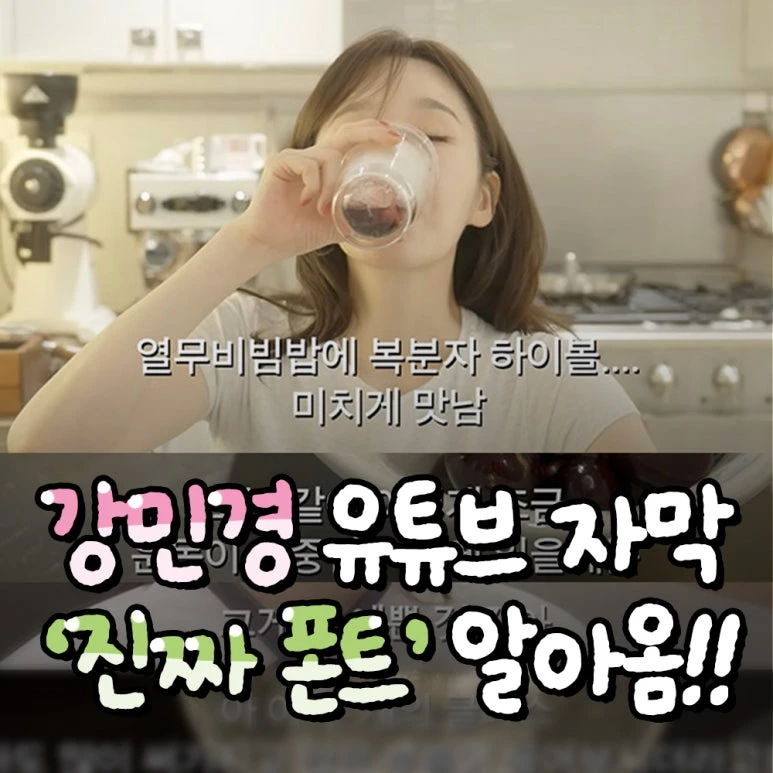
대표 콘텐츠 성과 글별 누적 조회수
강민경 유튜브 자막 폰트 비교
6,633회무료 브이로그 폰트 BEST5
4,520회무료 픽셀폰트 BEST5
4,006회상위 3편이 글별 누적 조회수의 약 36%를 차지했으며, 실제 활용 사례를 보여주는 비교·추천형 콘텐츠에서 높은 관심을 확인했습니다.
신규 발행 중단 이후에도 지속적인 조회수 확보
2026년 2월 10일 마지막 게시글 발행 이후 8개월간 신규 콘텐츠 없이도 19,190회의 추가 조회수를 기록했습니다. 월평균 약 2,400회로, 정상 발행 기간 6개월의 월평균 조회수 대비 약 63% 수준을 유지하며 기존 콘텐츠의 지속적인 검색 유입을 확인했습니다.
처음에는 제가 잘 알고 있는 정보를 전달하는 데 집중했지만, 운영 과정에서 이용자가 실제로 찾는 정보와 활용 맥락을 이해하는 것이 중요하다는 점을 배웠습니다.
콘텐츠 반응을 분석해 운영 방향을 전환하고, 실제 사용 사례를 중심으로 폰트 정보를 제공한 결과 검색 유입 77%를 확보했습니다. 이를 통해 콘텐츠 기획부터 제작·운영·성과 분석까지 직접 경험했으며, 신규 발행 없이도 지속적으로 유입이 발생하는 검색 기반 콘텐츠 자산을 구축했습니다.
Done
마케팅개인네이버 블로그
검색 수요를 읽고 폰트 리뷰로 방향을 바꿔 검색 유입 77%를 만들었습니다.
Web & Analytics
이 사이트를 직접 기획하고 Claude와 함께 만들어 GitHub Pages로 운영합니다. 지원하는 공고마다 첫 화면과 대표 작업 순서를 바꾼 버전과 전용 주소를 만들고, GTM·GA4 이벤트로 어떤 버전에서 어떤 작업이 끝까지 읽혔는지 확인합니다.
| 주소 | 첫 화면 직무 | 대상 |
|---|---|---|
| /ohbrown/ | B2B 콘텐츠 마케터 | 오브라운 · OOH B2B 콘텐츠기획·GEO·SEO |
| /marketing/ | 콘텐츠 마케터 | 콘텐츠·채널 마케팅 |
| /design/ | 콘텐츠 디자이너 | B2B 정보·콘텐츠 디자인 |
| /commerce/ | 커머스 디자이너 | 상세페이지·이커머스 |
01
같은 작업이라도 공고가 먼저 묻는 능력이 다릅니다. 버전마다 첫 화면의 직무·핵심 문장·근거 한 줄과 대표 작업 순서, 먼저 펼쳐지는 일하는 방식을 바꾸고, 지원서에는 그 공고 전용 주소를 넣습니다.
| 꼬리표 | 예시 |
|---|---|
| 버전 | /ohbrown/ |
| utm_source | saramin · email |
| utm_medium | resume · cover_letter |
| utm_campaign | 지원 회사 (없으면 버전 이름) |
02
전용 주소 뒤에 지원 채널을 꼬리표(UTM)로 붙입니다. 꼬리표 없이 들어와도 전용 주소가 들어온 사이트를 꼬리표로 옮겨 적어, 주소를 거치며 유입 경로가 사라지지 않게 했습니다.
| 이벤트 | 언제 | 함께 남기는 값 |
|---|---|---|
| work_detail_open | 작업 상세보기를 열 때 | 작업 ID |
| work_detail_complete | 상세보기를 끝까지 읽었을 때 | 작업 ID |
| about_section_view | About의 Profile·Career·Education·Skills가 화면을 채울 때 | 구간 |
| timeline_scene_view | 경력 타임라인의 2019·2023·2024에 들어설 때 | 연도 |
| how_item_open | How I Work 항목을 펼칠 때 | 항목 |
| contact_click | 전화·메일·Behance를 누를 때 | 연락 방법 |
| contact_copy | 전화번호·메일 주소를 복사할 때 | 연락 방법 |
| portfolio_version | 공고별 버전으로 들어왔을 때 | 버전 |
03
페이지 조회만으로는 담당자가 무엇을 봤는지 알 수 없어, 작업 열람과 끝까지 읽음, 경력 타임라인의 연도, 연락 시도를 이벤트로 남깁니다. 모든 이벤트에는 어느 버전에서 일어났는지(portfolio_version)가 함께 붙습니다.
04
지원 후 GA4에서 버전별로 방문, 작업 열람, 끝까지 읽은 작업, 연락 시도를 확인하고, 반응이 약한 부분은 다음 지원 버전의 첫 화면과 대표 작업 순서에 반영합니다.
Done
마케팅개인웹·분석
HTML/CSS/JS, GTM, GA4, Claude
공고별 버전과 GA4 이벤트로 어떤 작업이 읽혔는지 확인하는 사이트입니다.
addd 작업물


Done
디자인addd회사소개서
Figma
기술·사업·성과·글로벌 확장을 페이지별로 나눠 회사소개서를 재구성했습니다.
B2B 고객에게 ADDD의 공간 분석 솔루션 SPACE-I를 소개하는 양면 플라이어입니다. 복잡한 기술 정보를 다이어그램과 이미지로 시각화했습니다.
B2B 고객을 대상으로 ADDD의 공간 분석 솔루션 SPACE-I를 소개하기 위한 플라이어를 제작했습니다. 솔루션을 처음 접하는 사람도 핵심 기능과 활용 방안을 쉽게 이해할 수 있도록 복잡한 기술 정보를 다이어그램과 이미지로 시각화했습니다.
SPACE-I의 기술적 특징과 활용 가치를 직관적으로 전달하기 위해 정보를 아래 순서로 구성했습니다. 텍스트 중심의 설명을 줄이고 다이어그램과 이미지로 주요 기능을 표현해 B2B 고객의 이해를 돕고자 했습니다.
공간 데이터 분석, 행동 유형·페르소나 분석, 공공 안전 분석 등 주요 기능을 구분하고 활용 흐름에 맞춰 배치했습니다.
데이터 대시보드와 분석 다이어그램을 활용해 복잡한 기술과 분석 결과를 이해하기 쉽게 표현했습니다.
카메라 디바이스와 공간 동선 분석 이미지를 AI로 제작해 솔루션의 작동 방식과 활용 장면을 시각적으로 전달했습니다.
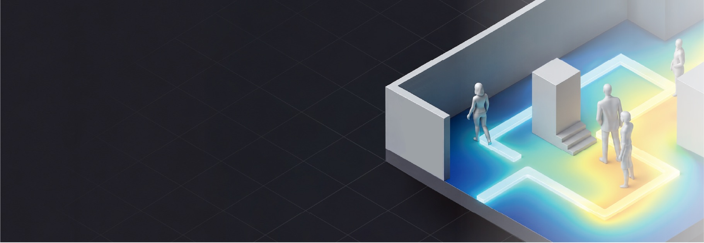
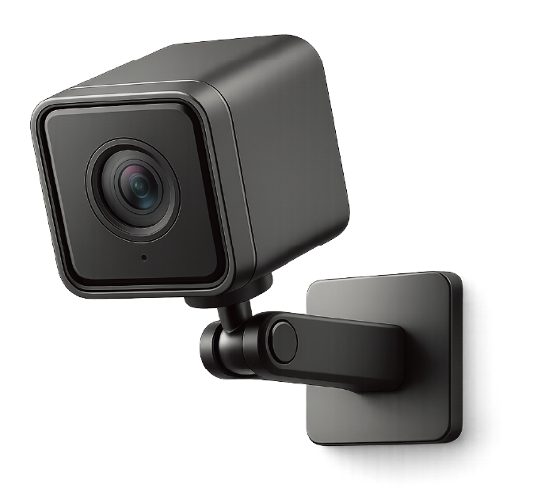
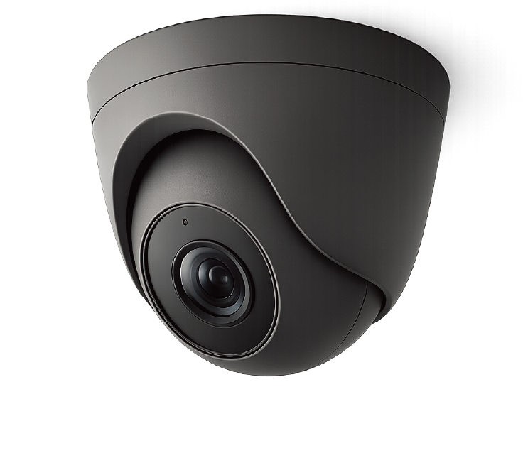
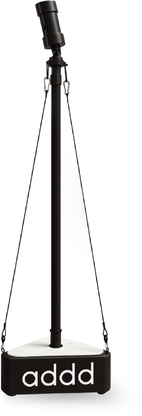
SPACE-I의 핵심 기능과 활용 분야를 한눈에 파악할 수 있는 양면 플라이어를 완성했습니다.
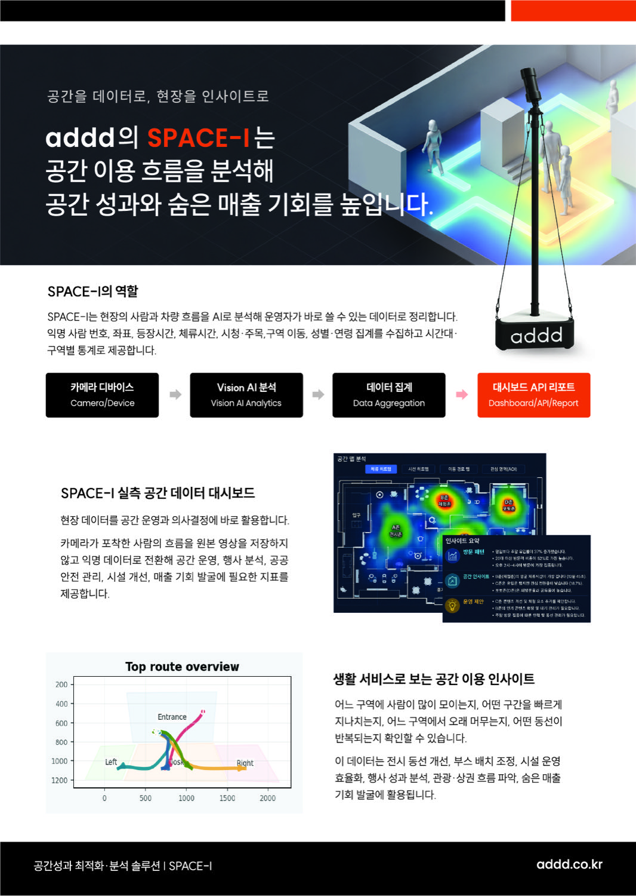
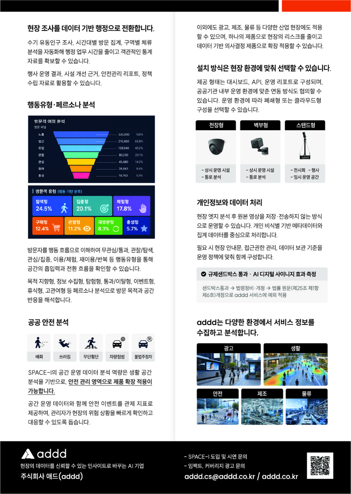
기술 중심의 솔루션 정보를 고객 관점에서 정리하고, 다이어그램과 AI 이미지를 활용해 이해하기 쉬운 B2B 홍보 자료로 제작했습니다.
Done
디자인addd인쇄물
Illustrator, GPT
솔루션 핵심 기능을 다이어그램과 AI 이미지로 시각화한 플라이어입니다.
Editorial Design
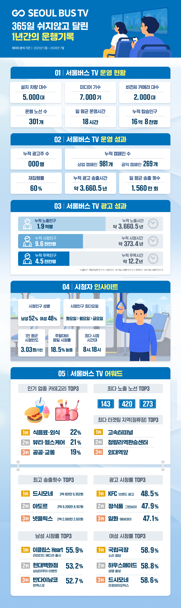
Overview
서울버스 TV의 1년 운영 데이터를 운영 현황·운영 성과·광고 성과·시청자 인사이트·어워드 다섯 파트로 정리한 인포그래픽입니다. 수치는 카드로, 순위는 TOP3 목록으로 나눠 숫자가 많아도 한눈에 읽히도록 구성했습니다.
Done
디자인addd인포그래픽
1년 운영 데이터를 다섯 파트로 나눠 숫자가 많아도 한눈에 읽히게 했습니다.
Editorial Design


Overview
CES 2026 addd 부스 방문객을 addd-i로 측정한 데이터와 CES가 발표한 행사 데이터를 종합해 리포트를 구성하고 작성했습니다. 유동·시청·주목 인구와 성별·연령, 유입 퍼널을 차트와 요약 카드로 정리해 두 장 안에서 성과가 한눈에 읽히도록 했습니다.
Done
디자인addd리포트
부스 방문객 데이터를 차트와 요약 카드로 두 장 안에 담은 리포트입니다.
개인 작업물
디자인개인UX/UI · 웹
HTML/CSS/JS, GSAP
평점 2.6의 걷기 리워드 앱을 상호작용·콘텐츠 전략과 심플한 디자인으로 다시 설계했습니다.
디자인개인웹 · 인터랙션
HTML/CSS/JS, GSAP
말차 음료 브랜드 슈퍼말차를 스크롤 인터랙션 중심의 브랜드 웹사이트로 구현했습니다.
Commerce Design
제품의 핵심인 3초 흡수력과 사용의 편리성을 중심으로 정보를 단계적으로 구성하여 장점을 쉽게 이해할 수 있도록 했습니다.
AI 생성 이미지, gif 이미지 등을 활용해 기능과 사용 장면을 직관적으로 전달하고자 했습니다.


디자인개인상세페이지
Photoshop, GPT
GIF와 AI 이미지로 3초 흡수력을 보여 줘 라우드소싱에서 우승했습니다.
Commerce Design
금강버섯농장 송화버섯에 대한 차별점을 자연스럽게 이해할 수 있도록 상세페이지의 흐름을 구성했습니다.
스마트팜 재배 환경과 제품의 맛과 특징을 시각화하고 상품 선택부터 배송·보관까지 이어지는 정보 흐름을 설계했습니다.


디자인개인상세페이지
Photoshop, GPT
스마트팜 재배 환경과 송화버섯의 맛·특징을 시각화한 상세페이지입니다.
Commerce Design
패키지의 일러스트를 활용해 도입부에서 제품의 통일된 인상을 주고 시선을 끌었습니다.
이후 제품 소개로 넘어가면서 분위기를 전환하되 브랜드의 일관성을 유지하면서도 친근하고 쉽게 내용을 이해할 수 있도록 했습니다.

패키지에 활용된 일러스트 요소를 재구성해 브랜드의 통일감을 유지하고자 했습니다.

패키지의 손그림 일러스트와 어울리는 손글씨 느낌의 폰트를 적용해 귀엽고 친근한 분위기가 자연스럽게 이어지도록 했습니다.

제품을 본격적으로 소개하기 시작하면서 패키지의 밝고 귀여운 분위기에서 벗어나 퓌낭시에의 고급스러움을 강조하기 위해 베이지·브라운 계열로 톤을 전환했습니다.


금산인삼약초산업진흥원의 로고를 활용한 신뢰감있는 마크 그래픽을 배치함으로써 제품이 공신력 있는 기관의 지원을 통해서 개발되었다는 점을 보여주었습니다.
기존의 일러스트와 유사한 느낌의 아이콘을 AI를 통해 생성하고 활용하여 통일감을 유지하였습니다..

패키지에 사용된 캐릭터를 중간중간 배치하여 통일감을 유지하는 동시에 친근하고 부담 없이 내용을 이해할 수 있도록 구성했습니다.


Done
디자인개인상세페이지
Photoshop, GPT
패키지 일러스트의 톤을 제품 소개까지 이어 간 상세페이지입니다.
Promotion Design
AI로 생성한 인물 비주얼을 중심으로 블랙프라이데이 컨셉을 표현하는 블랙 톤의 콘텐츠를 제작하였습니다.
프로모션의 내용을 한눈에 명확하게 인지할 수 있도록 가격·시술 부위·장비 정보를 구분해 배치했습니다.

AI로 생성한 인물 비주얼을 메인으로 활용, 제모 후 변화에 대한 기대감을 자연스럽게 유도하고, 가격과 시술 정보를 함께 배치해 프로모션의 핵심 혜택을 한눈에 인지할 수 있도록 구성했습니다.

AI로 생성한 시술 전후 이미지를 비교 배치하여 남성 제모의 전후 변화와 기대 효과를 직관적으로 보여주었습니다.
젠틀맥스 프로플러스 프로모션이라는 점을 살려서 ‘완성은 결국, 젠틀함으로’ 라는 카피 문구를 작성하였습니다.

Done
디자인개인프로모션
Photoshop, GPT
가격·시술 부위·장비를 나눠 한눈에 읽히는 블랙프라이데이 프로모션입니다.
작업마다 결과는 달랐지만, 일하는 방식은 같았습니다. 위 작업들에서 반복된 네 가지입니다. 항목을 펼치고 작업 이름을 누르면 근거가 된 작업이 바로 열립니다.
메일은 혜택 → 구성 → 활용 사례 → 제안서·문의 버튼 순으로, 홈페이지 아티클은 노선 → 시청률 비결 → 성과 데이터 → 예산처럼 광고주가 궁금해할 순서로, 상세페이지는 고민 → 해결 → 근거 → 구매 정보 순으로 풀었습니다. 정보를 어떻게 보여 주느냐에 따라 문의가 달라진다는 것을 영업 현장에서 직접 확인했습니다.
유튜브 숏폼은 검은 배경 위 두 줄 제목, 인스타그램 카드는 위쪽 제목·가운데 사진·오른쪽 아래 로고처럼 채널별 규칙을 정했습니다. 숏폼은 네이버 클립·릴스·숏츠에 함께 올려, 구독자 60명인 채널에서도 편당 1천~1.5천 회씩 재생됐습니다.
문의에서 자주 나온 “아이돌 광고 트럭”, 셀링 포인트가 담긴 “시위트럭 합법”처럼 고객의 말로 키워드를 골라 회사 블로그를 운영했고, 주요 키워드 상단 노출과 월 순방문자 3.4배(112명 → 380명)로 이어졌습니다. 홈페이지 글과 유튜브를 꾸준히 올린 뒤에는 ChatGPT 검색으로 문의가 들어온 사례도 있었습니다.
디자이너로 일을 시작해, 기획한 콘텐츠를 직접 디자인하고 글까지 써서 발행합니다. 블로그·인스타그램·유튜브 콘텐츠는 건당 평균 1일 안에 완성했고, 메일은 HTML/CSS 템플릿으로 직접 만들어 보냈습니다. 부족한 개발 지식은 Claude로, 이미지 제작은 생성형 AI로 보완합니다. 지금 보고 계신 이 사이트도 직접 만들었고, 지원하는 공고마다 버전과 전용 주소를 나눠 GA4로 무엇이 읽혔는지 확인하며 운영합니다.
공고의 주요업무 다섯 가지와 AI 활용 자격요건에 맞춰, 제가 해 온 일을 정리했습니다. 공고 제목의 SEO·GEO와 필수 자격인 AI 활용부터 두었습니다. 항목을 펼치고 작업 이름을 누르면 근거가 된 작업이 바로 열립니다.
문의에서 자주 나온 “아이돌 광고 트럭”, 셀링 포인트가 담긴 “시위트럭 합법”처럼 고객의 말로 키워드를 골라 회사 블로그를 운영했고, 주요 키워드 상단 노출과 네이버 메인 사명 검색 노출, 월 순방문자 3.4배(112명 → 380명)로 이어졌습니다. 제품명을 구글에서 검색하면 유튜브 영상이 최상단에 나왔고, 홈페이지 글과 유튜브를 꾸준히 올린 뒤에는 ChatGPT 검색으로 문의가 들어온 사례도 있었습니다.
줄글과 버튼 하나뿐이던 광고 상품 메일을 혜택 → 활용 사례 → 제안서·문의 버튼 순으로 다시 설계하고, HTML/CSS 템플릿으로 직접 만들어 스티비로 잠재고객에게 보냈습니다. 들어온 문의에 응대해 미팅과 실제 판매까지 이어 갔습니다. 회사소개서는 기술 → 사업 구조 → 성과 → 글로벌 확장 순으로 재구성했고, 지금 보고 계신 이 포트폴리오 사이트도 직접 기획해 만들었습니다.
회사 블로그는 월 순방문자·조회수·재방문율로 성과를 확인했고(순방문자 112명 → 380명, 조회수 168회 → 473회, 재방문율 4% → 7%), 게시물 하단 문의 배너를 다시 디자인해 글을 읽은 사람이 바로 문의할 수 있게 했습니다. 개인 폰트 블로그는 첫 달 188회였던 월 조회수가 다음 달 3,518회가 됐고, 이 사이트는 GA4로 공고 버전별 방문·작업 열람·완독·연락 시도를 측정합니다.
부족한 개발 지식은 Claude로 보완해 HTML 메일을 직접 만들어 보냈고, 그 메일이 문의와 실제 판매로 이어졌습니다. 잘룸 상세페이지는 이미지의 약 90%를 AI로 만들어 라우드소싱 공모에서 우승하고 외주로 1회 판매했습니다. 솔루션 플라이어는 AI 생성 이미지로 핵심 기능을 시각화했고, 이 포트폴리오 사이트도 Claude와 함께 만들어 공고별 버전과 GA4 측정까지 직접 운영합니다.
AI 옥외광고 데이터 기업 애드에서, PTZ 카메라와 비전 AI로 유동인구·옥외광고 매체·시청을 분석하는 솔루션을 광고주가 이해하는 콘텐츠로 풀었습니다. 홈페이지 아티클은 노선 → 시청률 비결 → 성과 데이터 → 예산처럼 광고주가 궁금해할 순서로 썼고, CES 2026 부스 방문객 측정 데이터와 서울버스 TV 1년 운영 데이터는 리포트와 인포그래픽으로 정리했습니다.
유튜브 숏폼은 검은 배경 위 두 줄 제목, 인스타그램 카드는 위쪽 제목·가운데 사진·오른쪽 아래 로고처럼 채널마다 규칙을 정하고, 건당 평균 1일 안에 기획부터 제작까지 마쳤습니다. 숏폼은 네이버 클립·릴스·숏츠에 함께 올려 구독자 60명인 채널에서도 편당 1천~1.5천 회 재생됐고, 인기 카드뉴스는 조회 4천~5천 회를 기록했습니다.